Capturas reales. El deslizador revela el resultado sin modificar las referencias. Las diferencias por datos y materiales se describen por vista.
Orden del árbol/tabs, minimapa, rama Git y runtime dependen del proyecto. Antialiasing e iconos tienen diferencias.
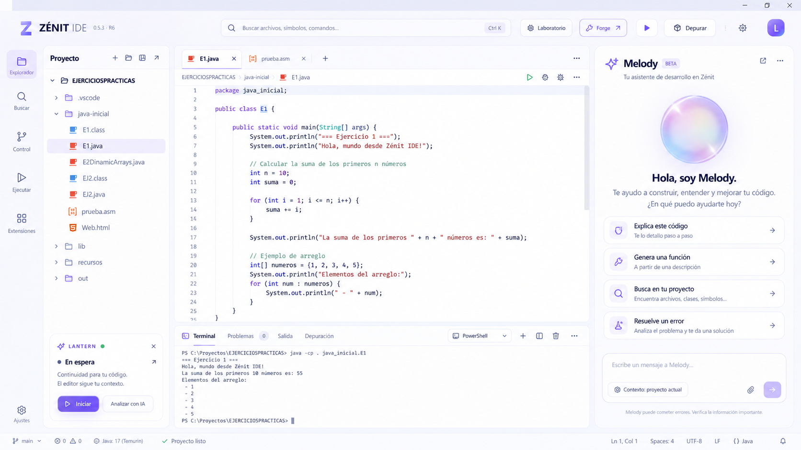
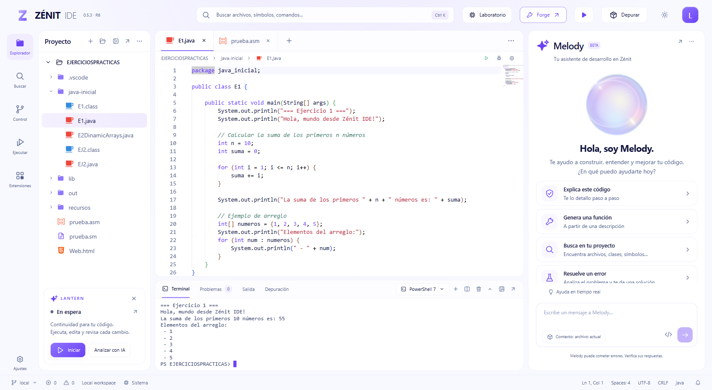
Ilustración local y filtros funcionales tienen diferencias menores de iconos/tipo. El estado vacío se conserva.
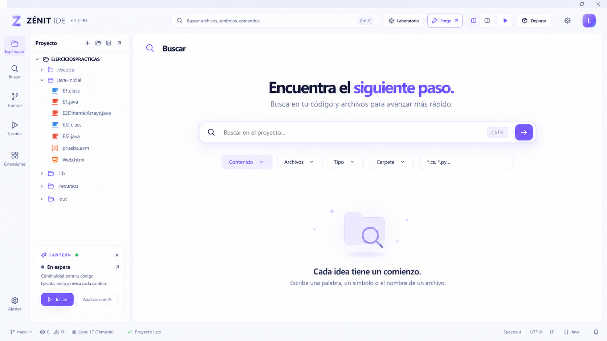
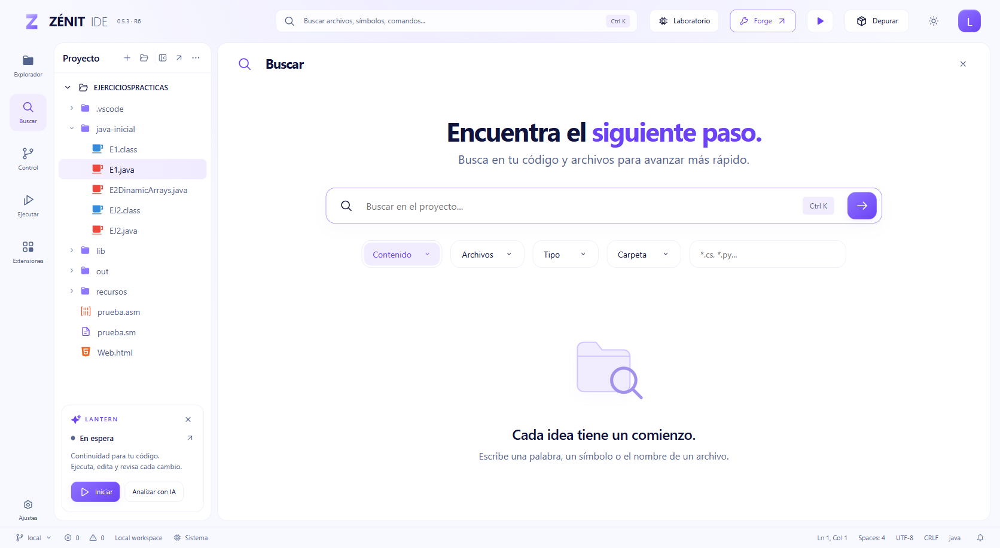
Texto de seguridad y categorías avanzadas conservan información real. Blur y rasterizado varían por host.
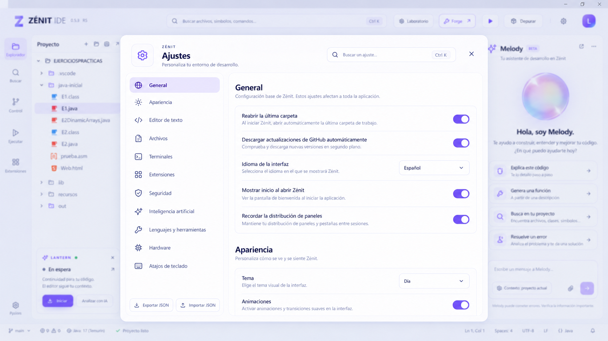
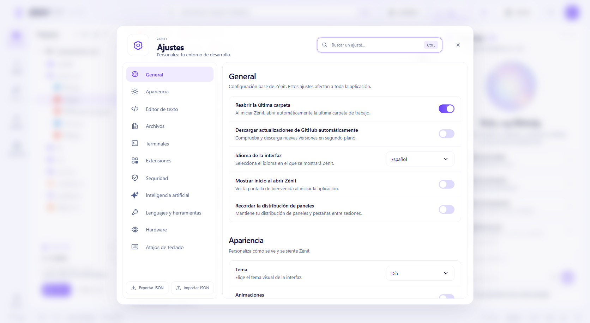
Paquetes, versiones, estados y compatibilidad son reales. No se copia la insignia Compatible del golden si no corresponde.
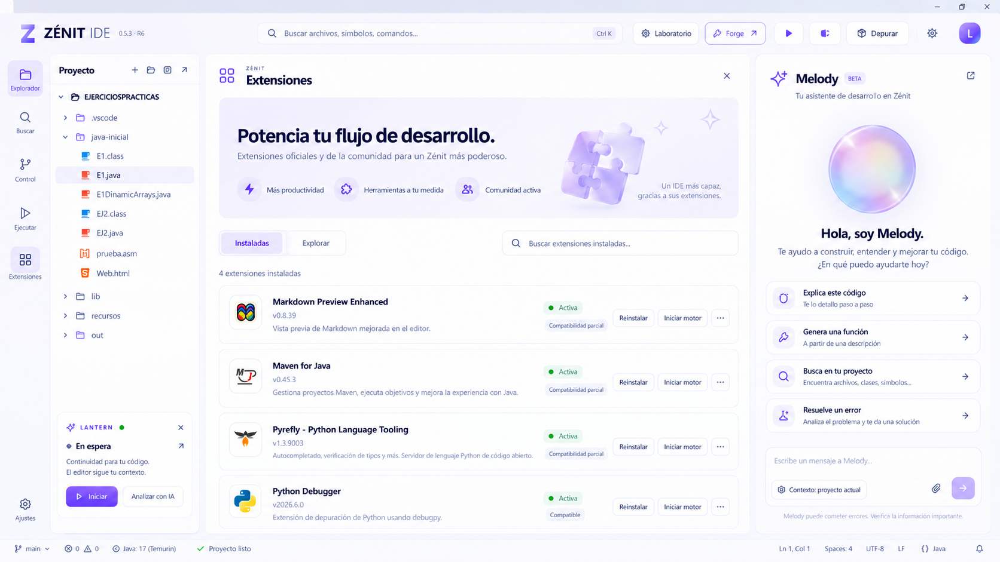
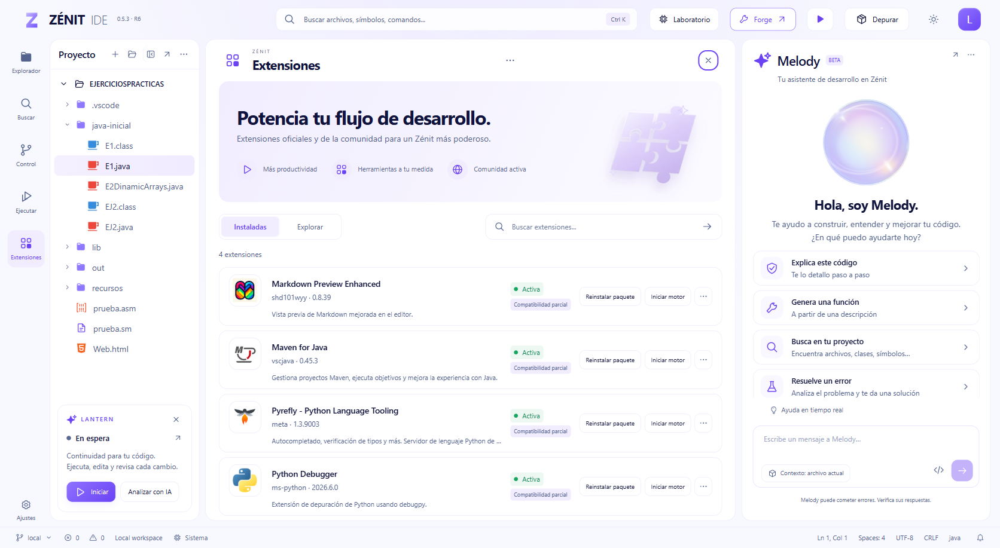
Ilustración local, algunas marcas y detalles inferiores difieren. Las rutas son reales; Ruta local no se sustituye por Incluido.
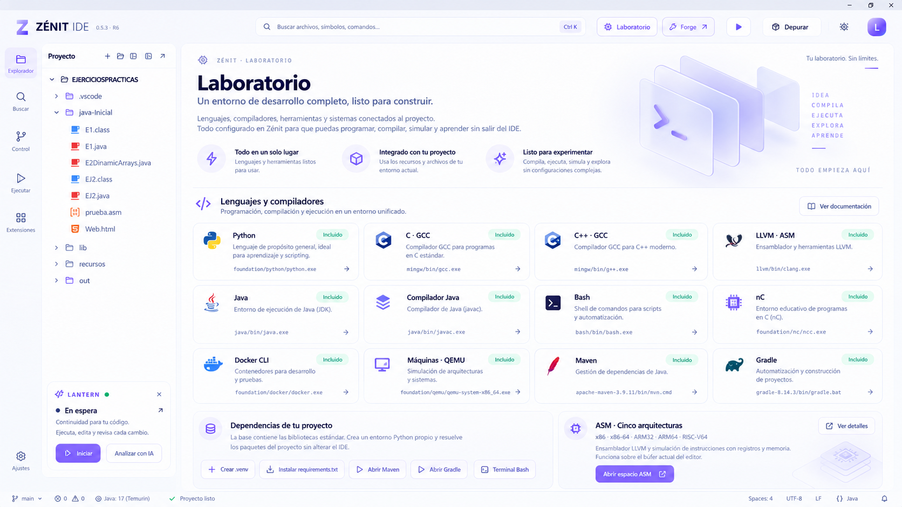
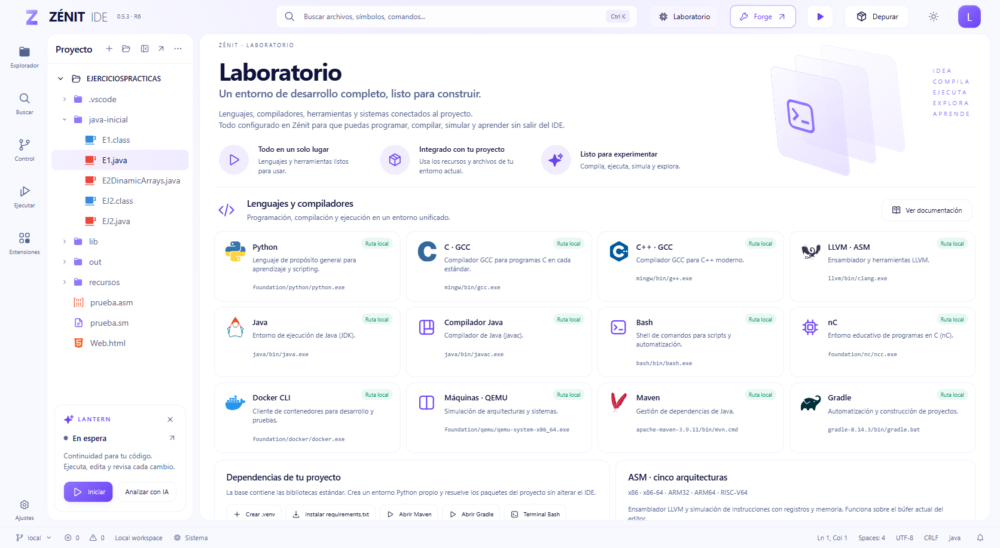
Se preservan Live, Lens y Multi-Language. Estado/stack/variables dependen del motor; no se rellenan para imitar la imagen.
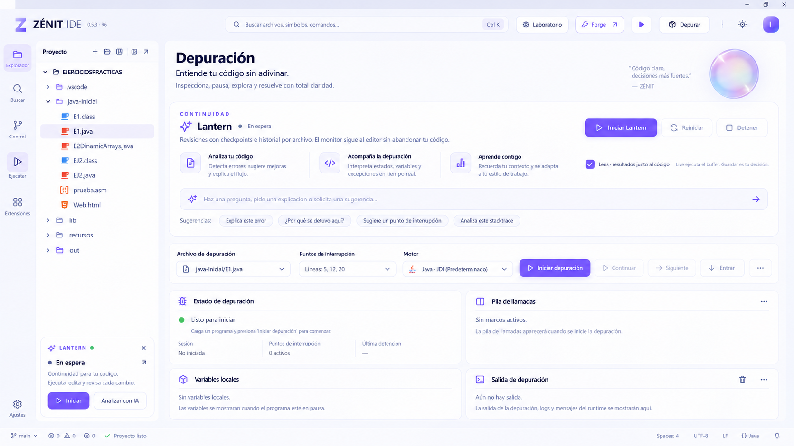
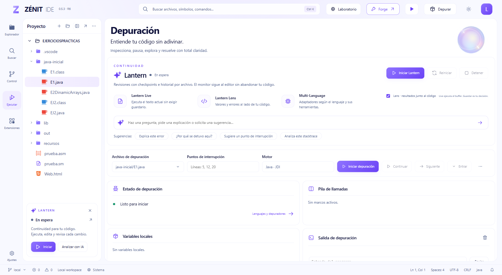
Marco y controles de acoplamiento difieren de la decoración OS. Contexto, ruta, herramientas y salida pertenecen al proyecto real.
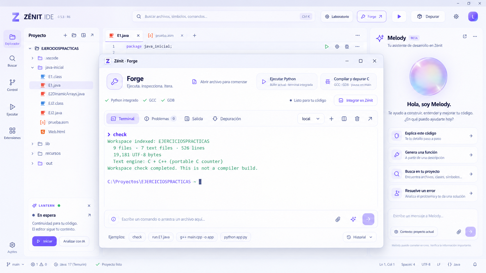
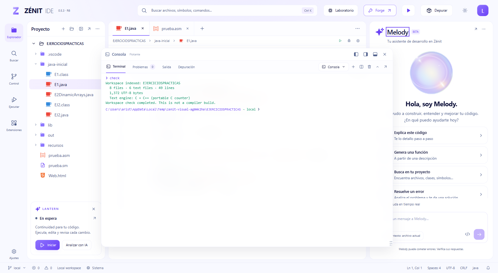